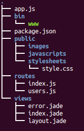
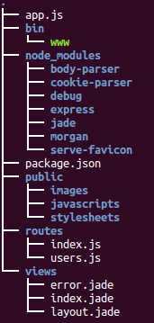
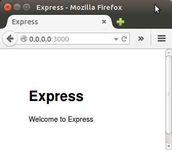
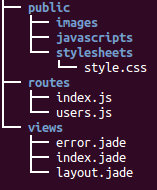
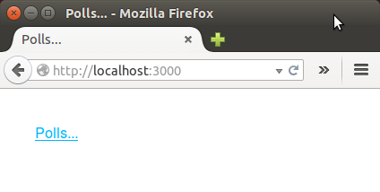
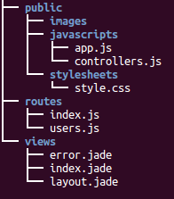

MEAN Stack : Real-time polls application I
We've already installed Node.js. In order to start using Express, we need to use NPM to install the module:
$ sudo npm install -g express
This will install the Express command line tool, which will aid in creating a basic web application. Because we want to install it globally (available to the other projects using the same Node.js version), we can add the -g flag.
The following creates an Express app named polls in the current working directory:
$ express polls
create : polls
create : polls/package.json
create : polls/app.js
create : polls/public
create : polls/public/stylesheets
create : polls/public/stylesheets/style.css
create : polls/routes
create : polls/routes/index.js
create : polls/routes/users.js
create : polls/views
create : polls/views/index.jade
create : polls/views/layout.jade
create : polls/views/error.jade
create : polls/bin
create : polls/bin/www
install dependencies:
$ cd polls && npm install
run the app:
$ DEBUG=polls:* npm start
create : polls/public/javascripts
create : polls/public/images

Install dependencies:
$ cd polls && npm install
Run the app in the root directory (polls/):
$ DEBUG=polls:* npm start > polls@0.0.0 start /home/k/TEST/polls > node ./bin/www polls:server Listening on port 3000 +0ms
ExpressJS app's default routing system looks like this:
- app.js loads the all the routes.
- The root path (/) is mounted on the routes/index.js.
- routes/index.js sets the variable title and renders index.jade.
var routes = require('./routes/index');
app.use('/', routes);
router.get('/', function(req, res) {
res.render('index', { title: 'Polls' });
});
Open routes/index.js, and change the title property to Polls:
var express = require('express');
var router = express.Router();
/* GET home page. */
router.get('/', function(req, res) {
res.render('index', { title: 'Polls' });
});
module.exports = router;
The res.render(viewName, data, callback(error, html)) where parameters mean following:
- viewName: a template name with filename extension or if view engine is set without the extension.
- data: an optional object that is passed as locals; for example, to use msg in Jade, we need to have {msg: "..."}.
- callback: an optional function that is called with an error and HTML when the compilation is complete.
res.render() is not in the Node.js core and is purely an Express.js addition that, if invoked, calls core res.end(), which ends/completes the response. In other words, the middleware chain doesn't proceed after res.end().

Jade is templating engine that allows developers to type less code and to execute powerfully almost all JavaScript functions. It is designed primarily for server side templating in node.js, however, it can be used in many other environments. It is only intended to produce XML like documents (HTML, RSS etc.) so don't use it to create plain text/markdown/CSS/whatever documents.
Change the views/index.jade template to include Bootstrap. Jade is a short-hand template language that compiles to HTML. It uses indentation to remove the need for closing tags, significantly reducing the size of our templates. We'll use Jade for the main page layout only.
doctype html
html(lang='en')
head
meta(charset='utf-8')
meta(name='viewport', content='width=device-width,initial-scale=1, user-scalable=no')
title= title
link(rel='stylesheet', href='//netdna.bootstrapcdn.com/bootstrap/3.0.3/ css/bootstrap.min.css')
link(rel='stylesheet', href='/stylesheets/style.css')
body
nav.navbar.navbar-inverse.navbar-fixed-top(role='navigation')
div.navbar-header
a.navbar-brand(href='#/polls')= title
div.container
div
When using Jade templates, take care to indent our code properly! Jade uses text intend (2 spaces) to determine where an HTML element belongs in the DOM.

We used Jade for the main page layout. Later, we'll use Angular partial templates to add functionality to this page.
Now it's the time to start using Angular. We need to include it and add directives within our HTML page. Let's change the html element in views/index.jade to the following:
html(lang='en', ng-app='polls')
Within the head block in this file, add the following script elements to load Angular and the Angular Resource module:
script(src='//ajax.googleapis.com/ajax/libs/angularjs/1.4.5/angular.min.js') script(src='//ajax.googleapis.com/ajax/libs/angularjs/1.4.5/angular-resource.min.js')
Next, we may want to change the body element in the template, adding an ng-controller attribute (to later bind the user interface to the controller logic code):
body(ng-controller='PollListCtrl')
Finally, change the last div element in the template to include an ng-view attribute:
div(ng-view)
Here is the modified views/index.jade:
doctype html
html(lang='en', ng-app='polls')
head
meta(charset='utf-8')
meta(name='viewport', content='width=device-width,initial-scale=1, user-scalable=no')
title= title
link(rel='stylesheet', href='//netdna.bootstrapcdn.com/bootstrap/3.0.3/ css/bootstrap.min.css')
link(rel='stylesheet', href='/stylesheets/style.css')
script(src='//ajax.googleapis.com/ajax/libs/angularjs/1.4.5/angular.min.js')
script(src='//ajax.googleapis.com/ajax/libs/angularjs/1.4.5/angular-resource.min.js')
body(ng-controller='PollListCtrl')
nav.navbar.navbar-inverse.navbar-fixed-top(role='navigation')
div.navbar-header
a.navbar-brand(href='#/polls')= title
div.container
div(ng-view)
By default, Express publishes static resources like JavaScript source files, CSS stylesheets, and images from the public directory in our project. The public/javascripts/app.js file will contain the Angular module for the app, defining the routes and templates to use for the user interface:
var polls = angular.module("polls", ['ngRoute']);
polls.config([$routeProvider, function($routeProvider) {
$routeProvider.
when('/polls', {
templateUrl: 'partials/list.html',
controller: PollListCtrl
}).
when('/poll/:pollId', {
templateUrl: 'partials/item.html',
controller: PollItemCtrl
}).
when('/new', {
templateUrl: 'partials/new.html',
controller: PollNewCtrl
}).
otherwise({
redirectTo: '/polls'
});
}]);
- $routeProvider is defined as a function under config of polls module using key as $routeProvider.
- $routeProvider.when defines a url /polls which then is mapped to partials/list.html. partials/list.html should be present in the same path as main html page.If htm page is not defined then ng-template to be used with id=partials/list.html. We've used ng-template.
- otherwise is used to set the default view.
- controller is used to set the corresponding controller for the view.
Angular controllers (public/javascript/controllers.js) define the scope of our app, providing data and methods for the views to bind to.
// Managing the poll list
function PollListCtrl($scope) {
$scope.polls = [];
}
// Voting / viewing poll results
function PollItemCtrl($scope, $routeParams) {
$scope.poll = {};
$scope.vote = function() {};
}
// Creating a new poll
function PollNewCtrl($scope) {
$scope.poll = {
question: '',
choices: [{ text: '' }, { text: '' }, { text: '' }]
};
$scope.addChoice = function() {
$scope.poll.choices.push({ text: '' });
};
$scope.createPoll = function() {};
}

Ref: Build a real-time polls application with Node.js, Express, AngularJS, and MongoDB
Node.JS
Ph.D. / Golden Gate Ave, San Francisco / Seoul National Univ / Carnegie Mellon / UC Berkeley / DevOps / Deep Learning / Visualization